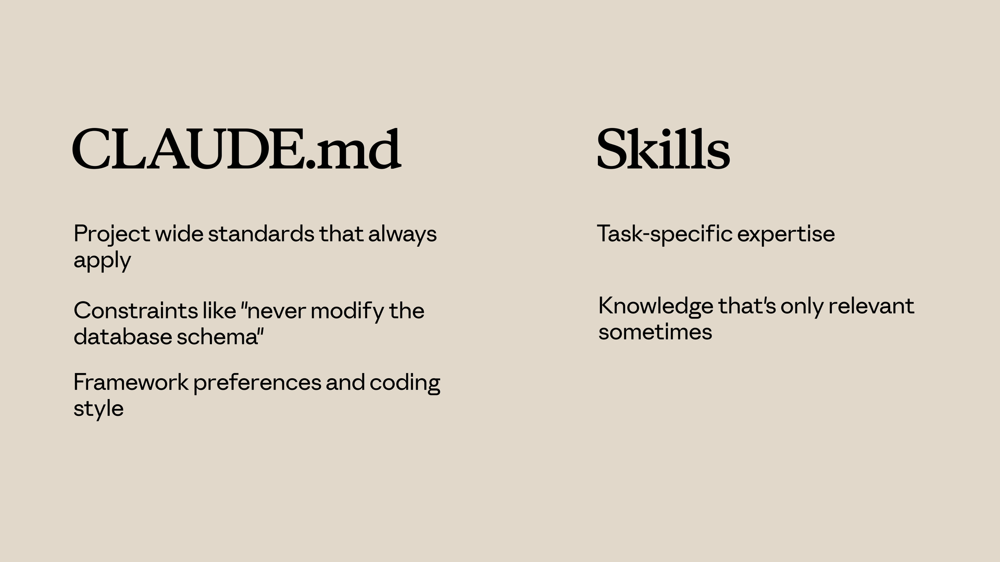

학습 내용
예상 소요 시간: 15분
이 레슨을 마치면 다음을 할 수 있게 됩니다:
- 스킬을 CLAUDE.md, 서브에이전트, 훅, MCP 서버와 비교하기
- 주어진 사용 사례에 맞는 적절한 Claude Code 커스터마이징 기능 선택하기
- 여러 기능을 효과적으로 조합한 상호보완적인 설정 설계하기
스킬 vs. 기타 Claude Code 기능
(3분)
Claude Code는 다양한 커스터마이징 옵션을 제공하며, 잘못된 옵션을 선택하면 불필요한 복잡성이 생길 수 있습니다. 이 영상에서는 스킬과 CLAUDE.md, 서브에이전트, 훅, MCP 서버 중 언제 무엇을 사용해야 하는지 설명합니다. 각 옵션의 핵심 차이점과 일반적인 개발 환경에서 이들이 어떻게 서로를 보완하는지 배웁니다.
핵심 요약
- CLAUDE.md는 모든 대화에 항상 로드되며 프로젝트 전반의 상시 적용 기준에 가장 적합합니다. 스킬은 필요 시 로드되며 특정 작업 전문 지식에 가장 적합합니다.
- 서브에이전트는 격리된 실행 컨텍스트에서 실행됩니다 — 위임된 작업에 사용하세요. 스킬은 현재 대화에 지식을 추가합니다.
- 훅은 이벤트 기반입니다(파일 저장, 도구 호출 시 실행). 스킬은 요청 기반입니다(질문 내용에 따라 활성화)
- MCP 서버는 외부 도구와 통합을 제공합니다 — 스킬과는 완전히 다른 범주입니다.
- 각 기능은 고유한 역할을 담당합니다 — 모든 것을 하나의 방식에 억지로 맞추기보다 조합해서 사용하세요
Claude Code는 스킬, CLAUDE.md, 서브에이전트, 훅, MCP 서버 등 다양한 커스터마이징 옵션을 제공합니다. 각각은 서로 다른 문제를 해결하며, 언제 무엇을 사용해야 하는지 알면 잘못된 선택을 피할 수 있습니다. 하나씩 살펴보겠습니다.
CLAUDE.md vs 스킬
CLAUDE.md는 항상 모든 대화에 로드됩니다. 프로젝트에서 Claude가 TypeScript strict mode를 사용하길 원한다면 CLAUDE.md 파일에 작성하면 됩니다.
스킬은 필요 시 로드됩니다. Claude가 요청을 스킬과 매칭시키면 해당 스킬의 지침이 대화에 참여합니다. PR 리뷰 체크리스트는 새 코드를 작성할 때 컨텍스트에 있을 필요가 없습니다 — 리뷰를 요청할 때 활성화됩니다.

CLAUDE.md 사용 시기:
- 항상 적용되는 프로젝트 전반의 기준
- "데이터베이스 스키마를 절대 수정하지 말 것"과 같은 제약 조건
- 프레임워크 선호도 및 코딩 스타일
스킬 사용 시기:
- 특정 작업에 특화된 전문 지식
- 때에 따라서만 필요한 지식
- 모든 대화를 복잡하게 만들 수 있는 상세한 절차
스킬 vs 서브에이전트
스킬은 현재 대화에 지식을 추가합니다. 스킬이 활성화되면 해당 스킬의 지침이 기존 컨텍스트에 합류합니다.
서브에이전트는 별도의 컨텍스트에서 실행됩니다. 작업을 받아 독립적으로 처리하고 결과를 반환합니다. 메인 대화와는 격리되어 있습니다.
서브에이전트 사용 시기:
- 별도의 실행 컨텍스트에 작업을 위임하고 싶을 때
- 메인 대화와 다른 도구 접근이 필요할 때
- 위임된 작업과 메인 컨텍스트 간의 격리가 필요할 때
스킬 사용 시기:
- 현재 작업을 위해 Claude의 지식을 강화하고 싶을 때
- 대화 전반에 걸쳐 전문 지식이 필요할 때
스킬 vs 훅
훅은 이벤트 발생 시 실행됩니다. 훅은 Claude가 파일을 저장할 때마다 린터를 실행하거나, 특정 도구 호출 전에 입력을 검증할 수 있습니다. 이벤트 기반으로 동작합니다.
스킬은 요청 기반입니다. 요청하는 내용에 따라 활성화됩니다.
훅 사용 시기:
- 모든 파일 저장 시마다 실행되어야 하는 작업
- 특정 도구 호출 전의 유효성 검사
- Claude 작업의 자동화된 부수 효과
스킬 사용 시기:
- Claude가 요청을 처리하는 방식에 영향을 주는 지식
- Claude의 추론에 영향을 미치는 가이드라인
모두 합치기
일반적인 설정은 다음을 포함할 수 있습니다:
- CLAUDE.md — 상시 적용되는 프로젝트 기준
- 스킬 — 필요 시 로드되는 작업별 전문 지식
- 훅 — 이벤트에 의해 트리거되는 자동화 작업
- 서브에이전트 — 위임된 작업을 위한 격리된 실행 컨텍스트
- MCP 서버 — 외부 도구 및 통합
각 기능은 고유한 역할을 담당합니다. 다른 옵션이 더 적합할 때 모든 것을 스킬에 억지로 맞추지 마세요 — 여러 기능을 동시에 사용할 수 있습니다. 스킬은 작업별 전문 지식을 자동으로 제공하고, CLAUDE.md는 상시 적용 지침에 사용되며, 서브에이전트는 격리된 컨텍스트에서 실행되고, 훅은 이벤트 발생 시 실행되며, MCP는 외부 도구를 제공합니다.
주제와 관련될 때 Claude가 자동으로 적용해야 할 지식이 있다면 스킬을 사용하고, 포괄적인 커스터마이징을 위해 다른 기능들과 조합하세요.
레슨 되돌아보기
- 현재 CLAUDE.md 파일을 살펴보세요. 스킬로 전환하면 더 잘 작동할 내용이 있나요(관련될 때만 로드)?
- 팀의 개발 워크플로우를 생각해보세요. 어떤 Claude Code 기능의 조합(스킬, 훅, 서브에이전트, MCP)이 가장 흔한 문제점을 해결할 수 있을까요?
다음 단계
다음 레슨에서는 스킬을 팀과 조직 전체에 공유하는 방법을 배웁니다 — 저장소에 커밋하는 것부터 플러그인을 통한 배포, 관리 설정을 통한 전사적 배포까지 다룹니다.
피드백
강좌를 진행하면서 스킬을 업무에 어떻게 활용하고 있는지, 그리고 어떤 피드백이든 들려주시면 감사하겠습니다. 피드백을 여기에 공유해 주세요.